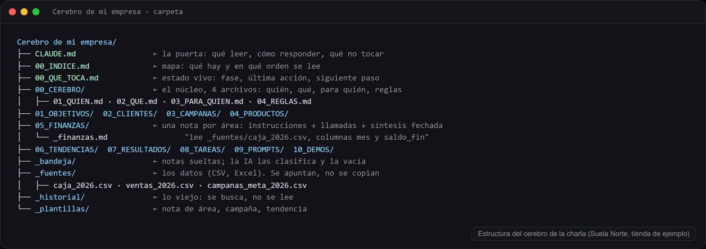

El sistema · 15 min
Instrucciones, llamadas, síntesis y decisiones. Por qué la nota apunta a los datos en vez de copiarlos.

Así es la nota de finanzas del cerebro de ejemplo, una tienda de zapatillas inventada. Cabe en una pantalla.
---
actualizado: 2026-08-31
dueno: Marta (socia)
---
# Finanzas
## Instrucciones
- Toda cifra sale de la fuente. Si esta nota tiene más de 30 días, avisa y abre el archivo antes de responder.
- Lee solo las columnas que pide la pregunta. No cargues todo.
- Disponible para ads = saldo − pagos pendientes − fijos del mes + cobros previstos − colchón. El colchón es una regla, no una estimación.
- Nunca recomiendes gastar por debajo del colchón. Si la pregunta lo implica, di que no.
## Llamadas
- Cuenta de resultados mensual: _fuentes/finanzas/pyg_2026.csv (columnas: mes, ventas_tienda, ventas_online, coste_ventas, ads, fijos).
- Tesorería y pagos previstos: _fuentes/finanzas/tesoreria_2026-09.csv. Incluye la fila colchon_minimo.
- Retorno de cada campaña: nota de campañas.
## Síntesis vigente (31-ago)
- Ventas ene-ago 269.600 €. Margen bruto 27%. Online del 33% al 41%.
- Cada euro de ads devuelve 4,3 € de venta atribuida.
- Saldo 23.400 €. Pendiente 14.200 € el 15-sep. Colchón 8.000 €. Disponible para ads: unos 8.300 €.
## Decisiones
- 2026-05: colchón mínimo 8.000 €, no se toca.
Fíjate en lo que no hay: ni una tabla de doce meses, ni un párrafo explicando qué es el margen. Eso está en el archivo y en la cabeza de quien lo lea. La nota dice cómo se calcula, dónde están los números y qué se decidió. Cuando alguien pregunta "¿puedo gastar 1.500 euros en anuncios este mes?", la IA lee esta nota, abre los dos archivos que le indica, aplica la fórmula y contesta que sí, con la condición del colchón y citando de dónde sale cada cifra.
La misma anatomía vale para clientes, campañas, productos, tendencias, tareas. Y para nóminas, proveedores o lo que tenga tu empresa. Cambia el contenido, la estructura no.
Cada una está en el cerebro de ejemplo y tiene una razón de coste detrás.
1. Índice primero, con instrucciones de lectura. El archivo 00_INDICE dice qué hay en cada carpeta y cómo leer: primero el núcleo, luego solo la nota del área que toque, luego sus llamadas. El modelo lee una página y decide. Sin índice, abre todo o pregunta.
2. Apuntar, no copiar. La nota de productos no tiene la tabla de precios: dice en qué archivo está y qué columnas leer. Si copiara la tabla, pagarías la tabla en cada lectura y, peor, un día la cambias en el Excel y la nota se queda vieja. El modelo lee dos precios distintos y elige uno al azar.
3. Núcleo corto y todo lo demás son hojas. Los cuatro documentos del centro caben en 900 tokens porque son listas, no prosa. Todo lo que no cambia cada semana va ahí. Lo que cambia va en notas de área que solo se leen cuando tocan.
4. Síntesis fechada arriba, nada de historial. Cada nota lleva cinco líneas de lo que hay que saber ahora, con fecha. El historial existe, pero no se lee: se busca cuando hace falta. Es la regla que más ahorra: un área de tres meses puede tener 50.000 tokens de historial y una síntesis de 200.
5. Datos estructurados en la cabecera. Cada nota empieza con actualizado y dueno. El modelo puede mirar treinta cabeceras y saber cuáles están viejas sin leer treinta textos.
6. Instrucción de columnas. La llamada no dice "mira el Excel": dice "columnas mes, ads e ingresos". El modelo lee tres columnas de ocho filas, no un libro de doce hojas.
Semana de la IA 2026 · Cluster TIC Asturias · 25 de septiembre · Adrián Nicieza, edrian.exe · contacto@edrianexe.com · @edrian.exe
Contenido generado con ayuda de IA y revisado por un humano. Datos de la tienda de ejemplo, simulados.